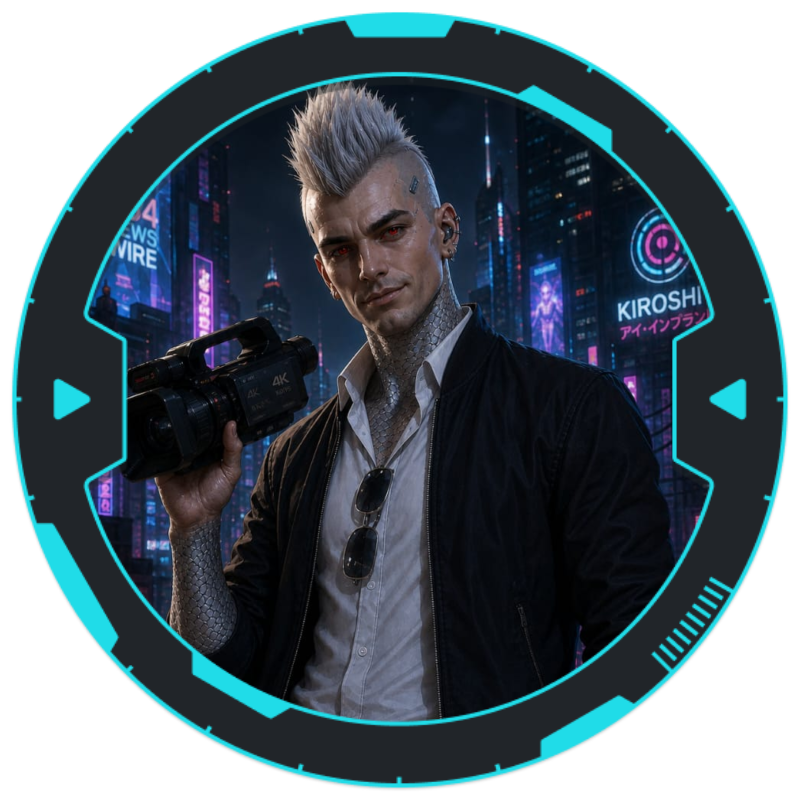

Alister

História
Nasceu e cresceu no México, perdeu seus pais em Night City, foi acolhido pelo seu mentor e "irmão", após se formar em comunicação retornou para Night City com seu "irmão" para trabalhar como documentarista nos canais de noticias, sempre disposto a quebrar as regras para pegar os caras maus com o objetivo direto de derrubar as corporações corruptas.
Armas e Armaduras
- Pistola Pesada (8) - 46 Munições Pistola P
- Jaqueta Blindada Leve Corpo (10 / 11)
- Jaqueta Blindada Leve Cabeça (11 / 11)
Cyberwares e Programas
- Pacote de Ciberáudio (2 / 3 Slots)
- Analisador de Estresse na Voz (+2 Percepção Humana e Interrogação)
- Agente Interno
- Tatuagens Luminosas (3) (+2 Vestimenta e Estilo)
Equipamentos
- Agente
- Gravador de áudio
- Binóculos
- Arpeu
- Lanterna
- Notebook
- Tocador de Música
- Codificador - Decodificador
- Câmera de Vídeo
- Chips de Memória (5)
- Rações (5)